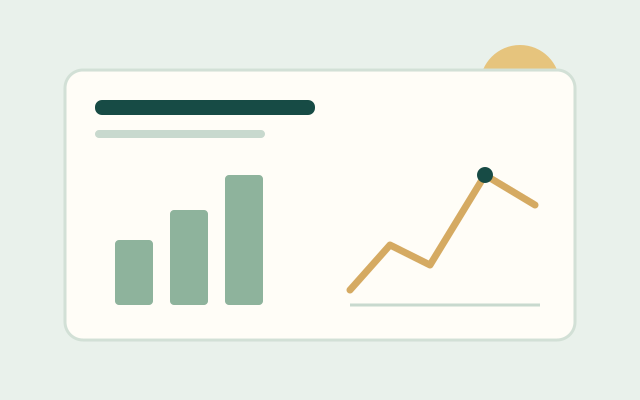
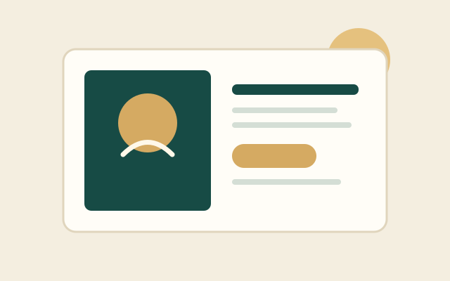
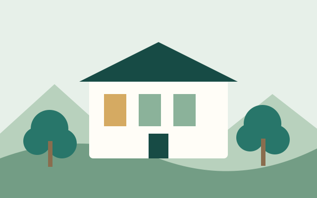
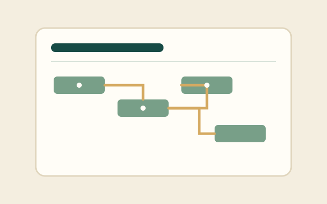
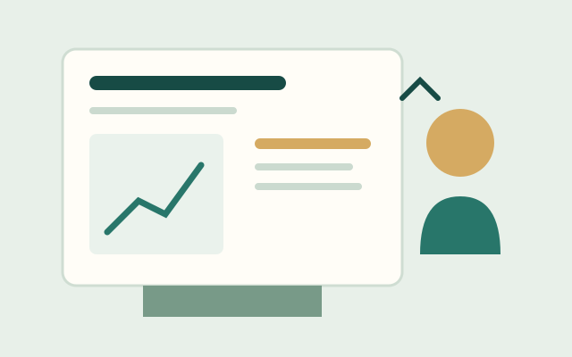

RESEARCH / DATA
消費者需求與市場觀察
以目標族群為核心，設計研究問題、整理資料並辨識影響消費決策的因素，最後提出可供後續驗證的建議。
這裡是學生專題與學習成果的展示空間。作品涵蓋市場研究、品牌企劃、資料分析、專案管理與永續實踐，呈現從發現問題到提出方案的學習歷程。
探索作品 ↓目前頁面以示範案例呈現作品分類與版面。請將示範內容替換為實際課程成果，並取得作品作者與照片中人物的使用同意。

以目標族群為核心，設計研究問題、整理資料並辨識影響消費決策的因素，最後提出可供後續驗證的建議。

從品牌故事、受眾輪廓與通路特性出發，規劃品牌定位、內容主題及行銷活動的初步執行方案。

觀察日常服務或資源使用情境，整理需求與限制，提出可分階段實施、並能衡量成效的改善構想。
以使用者旅程檢視服務流程，整理常見問題並設計資訊架構或數位介面原型，降低操作門檻。

依目標設定工作分解、時程、分工與風險管理方式，並以指標追蹤執行成果與團隊反思。

將研究發現、問題定義、方案比較與預期效益組織成易理解的簡報，提升提案的清楚度與說服力。
為每件作品加入完整資訊，讓內容可閱讀、可追溯，也能呈現學生的學習成果。
網站已包含本地 MP4 範例，可作為後續學生自製影片的版型。正式作品上架時，請以同意公開的實拍內容替換。
影片檔案：graph/department-intro.mp4
封面圖片：graph/department-intro-poster.jpg
影片與封面均使用相對路徑，放在 GitHub Pages 上時不依賴電腦本機路徑。之後拍攝校園或專題影片，可沿用相同標籤與版面。
一份完整的作品不只展示最後成果，也應說明研究過程、判斷依據與後續可改善之處。
說明為什麼選擇此議題、希望理解或改善什麼。
交代資料來源、研究方法、觀察結果與限制。
呈現具體產出、使用情境、執行方式或原型。
整理學到什麼、有哪些不足，以及下一步如何改進。
本專區用來說明 AI 如何協助網站架構、文案、前端樣式與檢查清單。請保留與 AI 的真實對話截圖，依教師規定作為佐證。
成果：建立首頁、學生作品頁與根目錄檔案架構；將主導覽、系所介紹、課程方向、作品集與頁尾資訊分區。
成果：新增手機版導覽、作品分類篩選、影音區塊及可讀性改善；圖片使用 graph/ 相對路徑。
成果：加入部署指南、素材來源與授權紀錄、雲端修改步驟。正式上線和 GitHub Commit 仍須由專案擁有者實際執行。
AI 能協助快速建立網站初稿，但輸出不會自動代表校方事實，也不能取代瀏覽器測試、素材授權確認或真實 GitHub 發布驗證。
請截取 AI 討論架構、排除路徑錯誤、生成版面與規劃加分區塊的真實對話。不要把本頁整理摘要冒充成逐字對話紀錄。
這是額外加分的執行紀錄區。要獲得版本控制項目的證明，必須在你自己的 GitHub Repository 完成一次線上編輯並提交 Commit。
index.html。index.html，再點右上方鉛筆圖示（Edit this file）。請在操作成功後，把實際資料填入作業報告或下方紀錄；不要先填寫虛構的 Commit SHA 或日期。
加分佐證建議：截圖顯示 Repository、Commit 訊息及已開啟的公開網站，並確認這三者對應同一個專案。
本地影片與插畫已包含於 graph/。下列為可供後續替換成真實校園／學生影像的素材來源；下載後請留存來源頁及授權資訊。
注意：來源連結是素材候選與授權參考，不代表原始照片或實拍影片已下載並放入本專案。現在網站實際載入的圖像為 graph/ 下的專案圖像素材，影片為本專案製作的 department-intro.mp4。